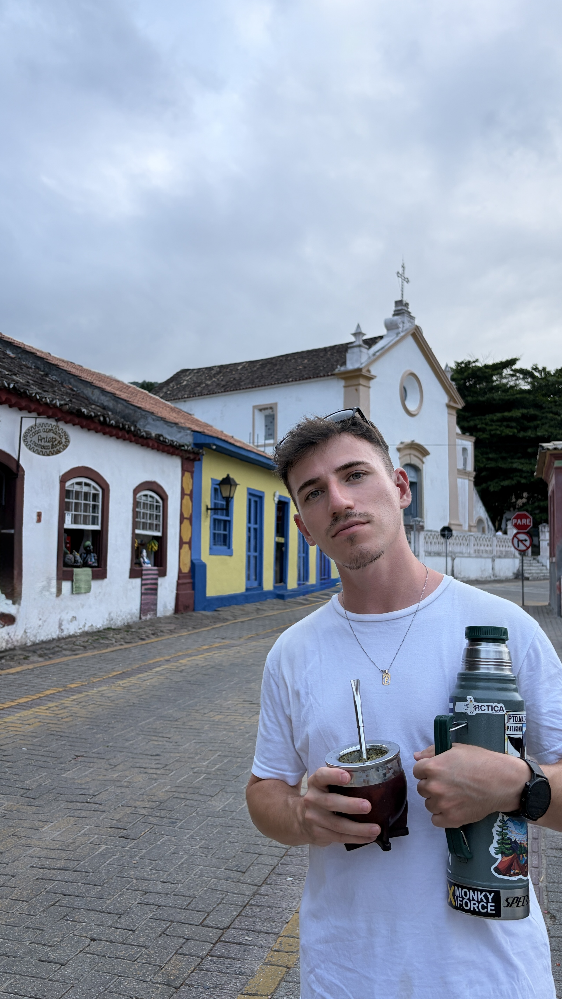

Francisco Abel Esparza
Conectando tecnología, ciencia política y compromiso social para transformar realidades
¡Hola! 👋 Soy Fran, tengo 28 años y resido en la ciudad de Santa Fe.
Soy técnico en informática personal y profesional, estudiante avanzado de la
Licenciatura en Ciencia Política, Diplomado en Gestión Legislativa
y en Diseño Gráfico.
Me gusta trabajar para transformar realidades a través del conocimiento, la tecnología y el compromiso social.
Te invito a explorar mi trayectoria y a conocerme.
Explora mi Portfolio
Formación Académica
Estudios avanzados de la Licenciatura en Ciencia Política en la UNL, experiencia de intercambio internacional eMOVIES en México, y formación en informática, diseño y procesos parlamentarios.
Ver EducaciónExperiencia Profesional
Funciones parlamentarias en el Honorable Senado de la Nación, coordinación y atención de actividades públicas en el Molino Fábrica Cultural, y participación activa en congresos científicos.
Ver ExperienciasSobre Mí
Nacido en Laguna Paiva y residente de Santa Fe. Fusiono la pasión por la informática, la música en piano, la lectura y el compromiso cívico en pos de idear proyectos y sumar valor social.
Conoceme MásÚltimas Publicaciones
Cargando publicaciones...